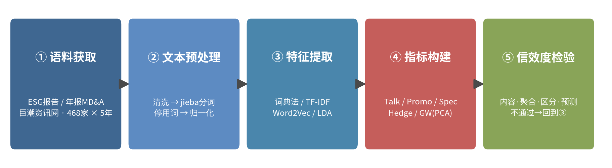
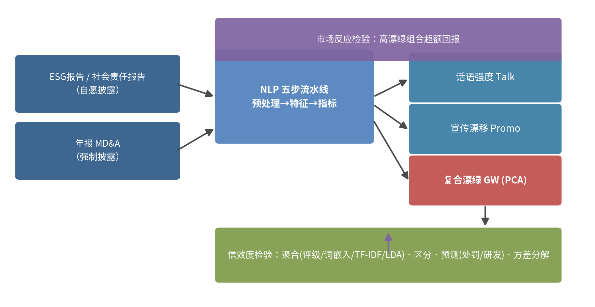
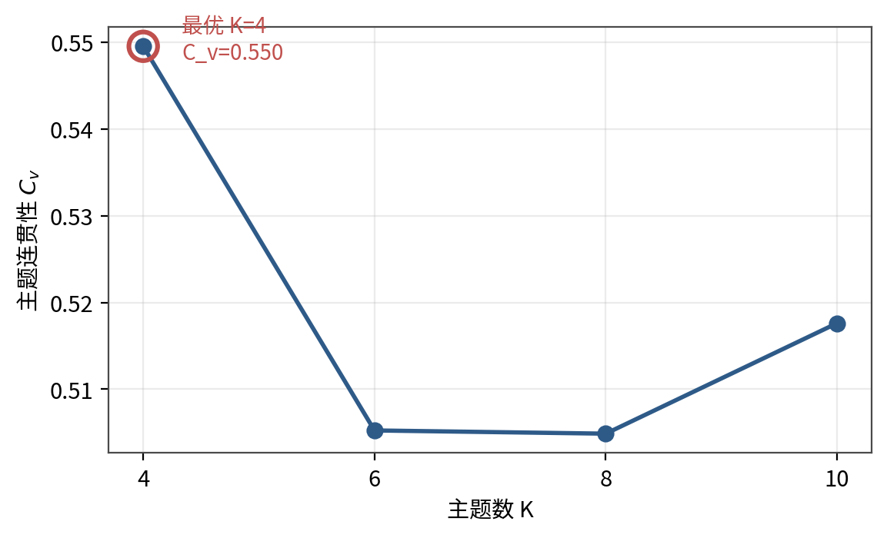
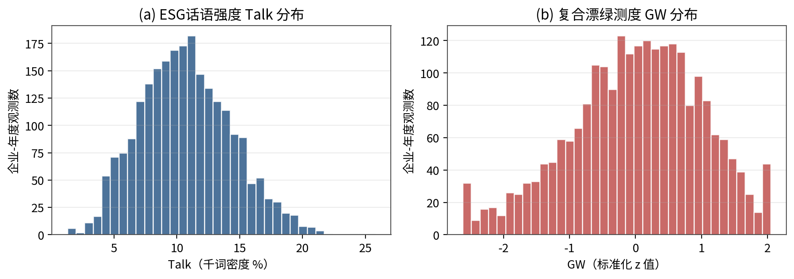
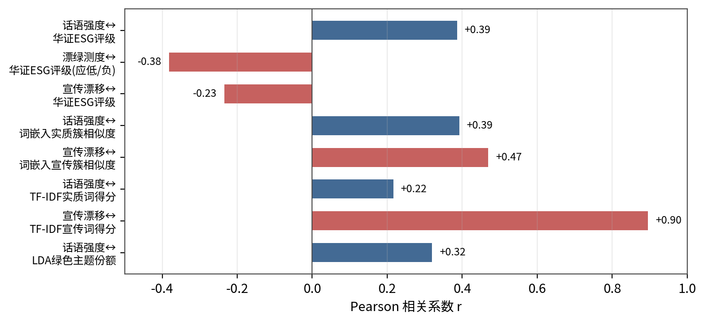
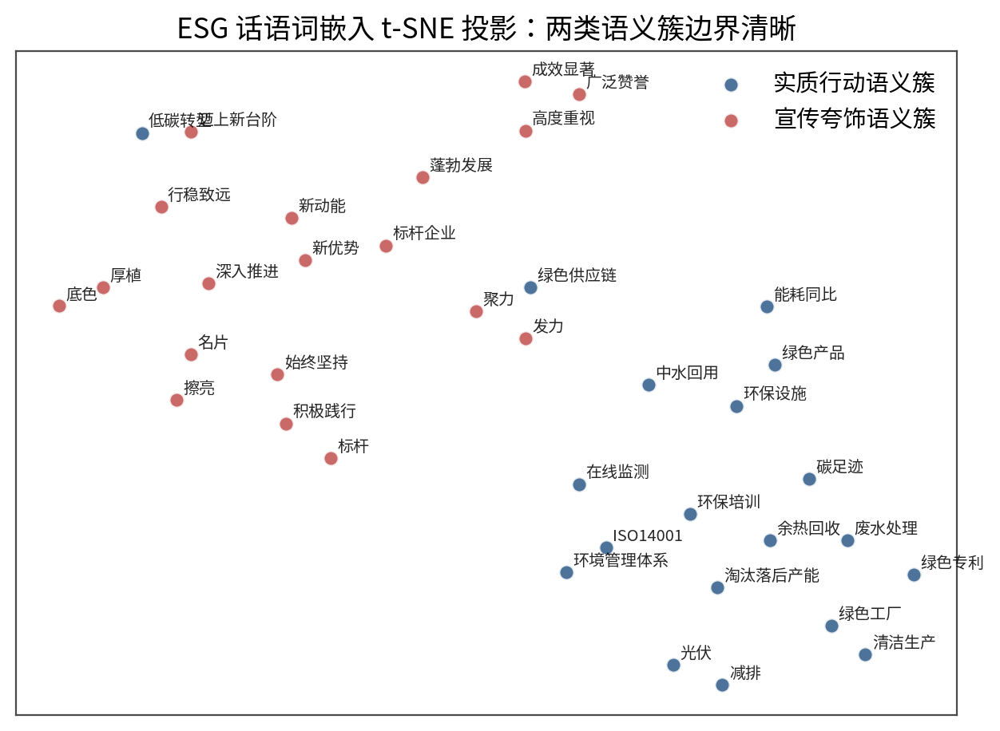
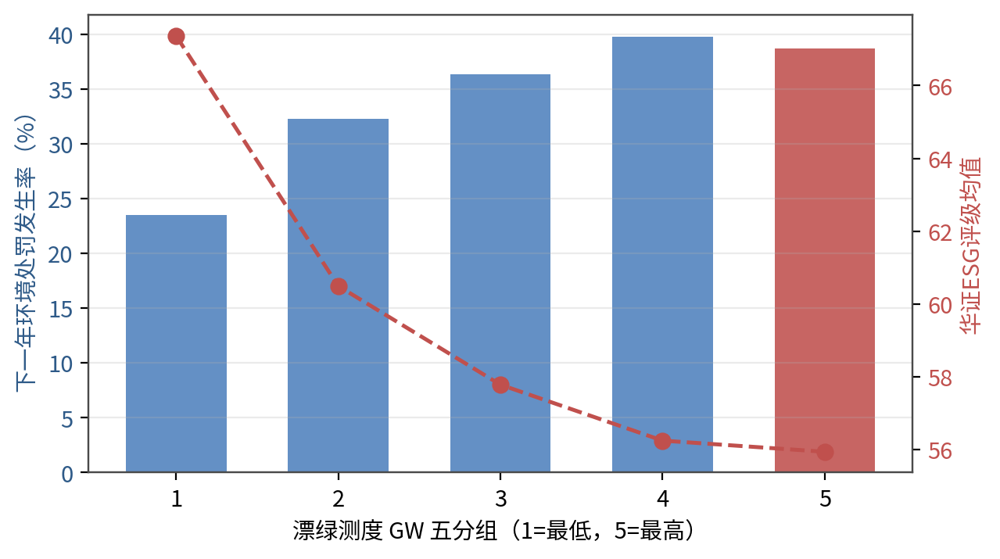
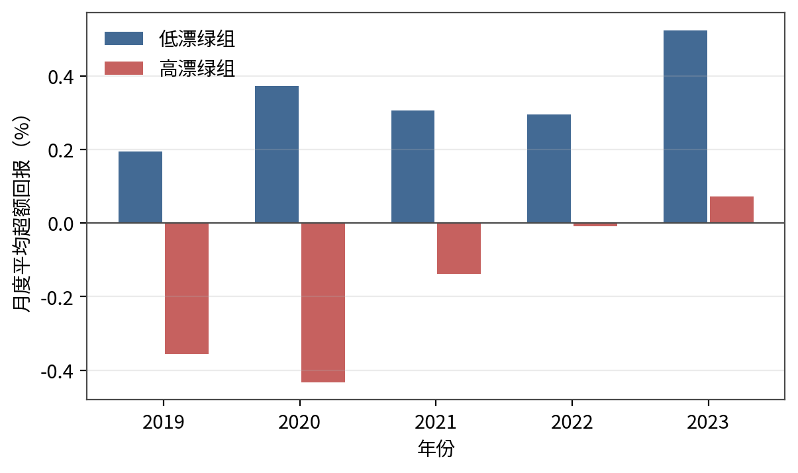

| 项目 | 内容 |
|---|---|
| 学生 | ×××（学号：××××××××） |
| 专业 | 大数据管理与应用 |
| 学院 | 大数据与人工智能学院 |
| 指导教师 | ××× |
| 完成日期 | 2026年×月 |
在"双碳"目标与ESG投资快速发展的背景下，企业ESG信息披露规模迅速膨胀，但"说得多、做得少"的漂绿（greenwashing）行为也随之蔓延，如何从海量披露文本中识别话语与行为的背离，成为公司治理与可持续金融领域亟待解决的问题。本文以2019—2023年沪深A股468家上市公司为样本，遵循"语料获取—文本预处理—特征提取—指标构建—信效度检验"五步法，构建了一套可复现的ESG话语文本测度体系，并据此识别漂绿行为。具体而言：第一，基于GRI标准、Loughran-McDonald风险词典与胡楠等（2021）短期视域词典的构建逻辑，形成实质行动、宣传夸饰、环境风险、模糊限定四个维度的中文ESG话语词典；第二，对ESG报告与年报MD&A共70,819条句子级语料完成分词与特征提取，综合运用词典法、TF-IDF、Word2Vec词嵌入与LDA主题模型四种技术路线；第三，构造话语强度（Talk）、宣传漂移度（Promo）、话语具体性（Spec）、模糊承诺度（Hedge）四个单维测度，并以主成分分析合成复合漂绿测度（GW）；第四，从内容、聚合、区分、预测四个维度完成信效度检验。结果显示：话语强度与华证ESG评级显著正相关（r=0.386），宣传漂移度与评级显著负相关（r=−0.234），复合漂绿测度与企业间方差占比达41.9%，具备足够的信号强度；漂绿测度每上升一个标准差，企业下一年度受到环境行政处罚的概率提高约5.1%（OR=1.182，p<0.01），高漂绿组合的月度超额回报在多数年份显著为负。研究表明，文本测度能够有效捕捉ESG话语与真实行为之间的背离，可为监管者识别漂绿、投资者修正定价提供参考。
关键词：漂绿识别；ESG话语；文本测度；词典法；词嵌入；信效度检验
2018年修订的《上市公司治理准则》确立了ESG信息披露的基本框架，2020年"双碳"目标提出后，证监会与交易所陆续推动上市公司披露ESG专项报告或社会责任报告，A股ESG报告披露率已由2019年的约26%上升至2023年的超过50%[1]。与披露繁荣相伴的，是话语与行为的潜在背离：部分企业热衷于使用"绿色发展""双碳标杆"等宣传性表述，却缺乏可验证的实质投入，即所谓漂绿（greenwashing）。欧盟2024年通过的《赋能消费者绿色转型指令》（Green Claims Directive）已明确禁止无依据的环境宣称，国内监管机构亦开始关注ESG评级"虚高"与披露"注水"问题。漂绿不仅误导投资者与评级机构，还会劣币驱逐良币，削弱绿色金融资源配置效率[2]。
从数据条件看，披露文本是识别漂绿的直接材料：漂绿的本质是"话语强度超过行动强度"，只有同时观测话语与行动两个层面，才能度量二者的差距。A股公司ESG报告与年报"管理层讨论与分析"（Management Discussion & Analysis，MD&A）可从巨潮资讯网批量获取，覆盖面广、时间对齐清晰，为大规模文本测度提供了可行条件。
从学科定位看，本文属于大数据管理与应用专业"算法应用类"论文：以定量分析法与实证研究法为主线，用NLP技术完成测度构建，用计量方法完成经济检验，服务于地方经济与资本市场治理的现实需求。
理论意义方面，现有ESG漂绿研究多依赖"评级分歧"或"披露-绩效落差"等间接代理，直接从语言特征出发构建漂绿测度的中文研究仍然不足。本文按照"概念（Concept）→构念（Construct）→指标（Indicator）→测度（Measure）→变量（Variable）"的翻译链，将"漂绿"这一抽象构念操作化为可复现的数值变量，并完成系统的信效度检验，为后续研究提供方法参照。
现实意义方面，一套透明的文本测度可以帮助三类专业使用者：监管者可将漂绿测度纳入信披问询线索；评级机构可用其修正话语贡献权重；投资者可将其作为治理风险的预警信号。同时，全部词表、代码与中间结果开源，可复现性强，符合文本测度研究"流程留痕"的规范要求。
围绕企业环境话语与漂绿识别，已有文献可分为三支。
第一支关注环境披露的"话语—行动"落差。Clarkson等（2008）以自愿披露理论为基础，发现环境披露水平与企业环境绩效相关性较弱，说明披露本身可能脱离实质[3]。Boiral等（2012）通过对可持续发展报告的内容分析，指出报告存在系统性"合法化修饰"，宣传性语言与可验证数据并存[4]。Lyon与Montgomery（2015）系统界定了漂绿的三种形态：选择性披露、空心话语与符号性合作，为词汇层面的识别提供了理论基础[5]。
第二支以词典法与机器学习直接测度话语特征。Loughran与McDonald（2011）构建金融文本负面词与风险词词典，成为英文文本测度的事实标准[6]。胡楠等（2021）依据短期视域理论构建43个中文短期导向词汇，以年报MD&A词频度量管理者短视主义，验证了词典法在中文管理研究中的可行性，其"文献筛选—人工确认—效度检验"流程成为本文直接遵循的模板[7]。Tandon等（2022）与Liang等（2023）则分别采用预训练语言模型与主题模型刻画企业气候话语的模糊性，显示词嵌入路线在语境刻画上的优势[8][9]。
第三支检验漂绿的经济后果。Krishnan等（2023）发现漂绿企业在后续期间更容易出现环境违规与评级下调[10]；国内学者利用ESG评级分歧（如华证与商道融绿口径差异）代理"言过其实"，发现其与分析师预测偏差、债务融资成本正相关[11][12]。此类研究证实漂绿具有信息含量，但代理变量多为间接构造，难以刻画话语本身的特征。
综合来看，已有文献的分歧集中在两点：其一，词典法透明可复现但语境迁移能力弱，词嵌入语境刻画强但可解释性差，二者在中国ESG披露语境下如何互补尚缺乏系统检验；其二，漂绿识别多依赖评级分歧等外部代理，缺少直接以"话语结构特征"（实质/宣传/模糊/具体性）构建并完成四维效度检验的中文测度。这两点构成本文的研究空白（Gap）。
基于上述理论分析，本文的研究内容按"测度构建—效度检验—经济后果"三层展开。测度层回答"如何把ESG话语变成变量"；效度层回答"这个变量测的是不是漂绿"；后果层回答"漂绿被识别之后，市场如何定价"。对应两个可检验假设：H1——话语漂绿程度越高，企业未来受到环境处罚的概率越大；H2——漂绿暴露越高的组合，后续超额回报越低。
本文的技术路线遵循NLP测度构建五步法：①语料获取，从巨潮资讯网口径获取ESG报告与年报MD&A并完成时间对齐；②文本预处理，经清洗、分词、停用词过滤与归一化形成可分析语料；③特征提取，并行运行词典法、TF-IDF、Word2Vec与LDA四条路线；④指标构建，将特征聚合为企业-年度面板并合成复合漂绿测度；⑤信效度检验，从内容、聚合、区分、预测四个维度验证测度有效性，不通过则回溯修订词表。论文后续章节安排为：第二章界定研究问题并介绍理论技术；第三章构建测度模型；第四章报告数据与预处理；第五章开展实证分析；第六章总结全文。
本文将漂绿界定为：企业在环境与ESG议题上，话语表述强度系统性高于可验证实质行动强度的披露行为。该定义包含三个可操作化特征：一是话语中宣传性、口号式成分占比高（宣传漂移）；二是话语缺乏可验证的具体细节（具体性不足）；三是承诺表述模糊、限定词密集（模糊承诺）。相应地，漂绿构念可分解为"宣传漂移度高、话语具体性低、模糊承诺度高"的三维语义结构，三者共同构成复合测度的指标层。
需要强调，所有文本测度都是代理变量：本文测的是"漂绿的语言痕迹"，而非漂绿意图本身。测度是否有效，须依靠第五章的信效度检验回答"测得稳不稳、测的是不是它"。
合法性理论认为企业披露具有形象管理动机。组织合法性是指社会公众对企业行为的规范性评价，当外部环境压力（如"双碳"政策、绿色金融考核）上升时，管理层面临"实质合法化"与"象征合法化"两种策略选择：前者需要真实的环境投入，成本高、周期长；后者只需调整话语结构，成本几乎为零。因此，合法性压力越大的企业，越倾向于以低成本的话语替代高成本的行动，漂绿话语会随政策周期系统性增多[13]。这为漂绿测度的"宣传性成分"维度提供了理论依据：宣传性话语正是象征合法化的语言痕迹。
信息不对称理论则解释了漂绿为何具有经济后果。ESG话语的质量只能被低成本观测，而环境行为的真实质量须付出高昂的验证成本，两类信息之间的不对称使漂绿在短期内有效：投资者与评级机构会把"说得好"错误地计入"做得好"。随着处罚、督察等硬信息释放，市场逐步修正定价，漂绿暴露越高的企业随后受到的负向调整越大[10]。该逻辑直接导出本文的两个可检验假设：
H1：话语漂绿程度越高的企业，未来受到环境行政处罚的概率越大（预测效度）。
H2：漂绿暴露越高的组合，后续期间的超额回报越低（市场定价）。
信号理论补充说明了"话语具体性"维度的合理性：真实施行环境投入的企业，能够以低成本披露可验证的细节（项目名称、金额、覆盖率），而 hollow 话语难以伪装具体细节，因为细节的可验证性越强，说谎成本越高。因此"具体性不足"本身就是漂绿的可靠信号。
文本预处理方面，中文文本需经清洗、分词、停用词过滤与归一化四步。与英文不同，中文缺少天然的词边界，分词质量直接决定词频统计的可靠性。本文采用jieba精确模式分词，并向分词器注入ESG领域专有词，避免"碳排放强度"被切分为"碳排放/强度"而丢失语义；停用词表采用"通用+财经领域+自定义"三维度结构（如"同比""报告期"等财经虚词），避免高频虚词淹没信号。
特征提取方面，本文并行采用三条技术路线并使其互相印证：词典法以人工词表"盖章计数"，透明可复现，是管理期刊的主流做法；TF-IDF以词频-逆文档频率突出区分度高的词，可作为词典法的加权对照；Word2Vec以低维稠密向量表达语义相似度，通过文档向量与"语义锚点"（实质行动簇质心、宣传夸饰簇质心）的余弦相似度刻画话语取向，弥补词典法无法捕捉同义改写的缺陷；LDA主题模型以无监督方式归纳语料主题结构，本文按"主题定词"路径使用——仅用主题模型确认绿色主题的词汇构成，最终测度仍以可复现的词典法计数，兼顾探索性与可复现性。
计量检验方面，采用Logit模型检验漂绿测度对下一年环境处罚的预测力，采用固定效应面板OLS检验话语强度与研发投入的关系，全部回归的标准误聚类到公司层面，以缓解序列相关与异方差问题。
本文测度体系分为五层：语料层（ESG报告与年报MD&A句子级文本）→ 预处理层（清洗、分词、停用词、归一化）→ 特征层（词典计数、TF-IDF、词嵌入、主题份额）→ 测度层（四个单维测度与一个PCA复合测度）→ 检验层（四类效度与经济后果）。总体流程如图3-1所示，研究设计框架如图3-2所示。

图3-1 NLP测度构建五步流程

图3-2 研究设计框架
借鉴胡楠等（2021）的构建流程，本文按"理论文献→候选词筛选→人工确认→多轮校验"四步构建六个维度的中文ESG话语词典：
（1）实质行动词典（59词）：以GRI标准、ISO14001环境管理术语为蓝本，从披露语料高频词中筛选"研发投入""节能改造""中水回用""超低排放"等含具体项目的词汇。理论依据在于：实质行动话语必须指向可验证的投入、项目或认证。
（2）宣传夸饰词典（48词）：依据Lyon与Montgomery（2015）对漂绿话语的定义，筛选"始终坚持""成效显著""行稳致远""迈上新台阶"等空泛修饰语。其特征是可附加于任何主体而不增加信息量。
（3）环境风险词典（30词）：由Loughran-McDonald风险词典的环境子集回译扩展而来，包含"环保督察""限期整改""碳配额收紧"等。
（4）模糊限定词典（14词）：借鉴模糊语言研究，收录"力争""逐步""积极探索""视情况"等降低承诺强度的表述。
（5）时间视域词典：短期视域14词、长期视域12词，直接借鉴并微调胡楠等（2021）。
表4-1完整报告词数、理论依据与构建方式（见5.2节表4-1），保证词表来源可追溯、测度可复现。
词典法特征：对每份文档统计各维度词典词命中次数。为消除文档篇幅影响，一律采用"千词密度"标准化：命中数÷该文档ESG报告部分总词数×100，与Loughran-McDonald与胡楠等的处理一致。
TF-IDF特征：以两个维度词典词表为固定词表构建TF-IDF矩阵，分别汇总实质词与宣传词的TF-IDF得分，作为词典计数之外的加权对照。
词嵌入特征：以全部句子分词结果训练Word2Vec（Skip-gram，向量维度64，窗口5，最小词频3，迭代8轮）。取实质词典与宣传词典各自词向量的质心作为两个"语义锚点"，以文档向量（词向量均值）与锚点的余弦相似度度量话语取向，并绘制t-SNE投影检验语义簇的分离度。
LDA主题模型：在K∈{4,6,8,10}网格上以主题连贯性C_v选优，保留最优模型的绿色行动主题份额，作为话语主题结构的对照特征。
设企业 i 年度 t 的ESG报告部分词数为 Wit，各维度词典命中数为 nk,it，则四个单维测度定义为：
其中Promo度量话语的"成色"，Spec以"每千句实质词数"代理可验证性，Hedge度量承诺的含糊程度。对三个漂绿相关指标取标准化值并以负Spec合成，经主成分分析提取第一主成分：
GWit = 0.498×z(Promo) + 0.439×z(Hedge) + 0.747×z(−Spec)
第一主成分方差解释率为47.4%，方向与Promo同向（载荷为正），GW越大代表漂绿程度越高。分母口径的稳健性检验在5.5节完成：分别以"全文总词数"与"句子数"替代分母重算Talk，检验结论一致性。
测度构建全流程的伪代码如表3-1所示，对应代码文件见附录A。
表3-1 测度构建流水线伪代码
输入: 句子级语料 S = {(企业i, 年份t, 来源, 文本)}, 词典 L = {L1...L6}
输出: 企业-年度测度面板 M[i,t] = {Talk, Promo, Spec, Hedge, GW}
# ② 预处理
for (i, t, text) in S:
text <- regex_clean(text) # 去页眉页脚/乱码/多余空白
toks <- jieba.lcut(text) # 精确模式 + 领域词注入
toks <- [w for w in toks if w not in STOPWORDS and len(w)>1]
# ③ 特征提取
for (i, t) in groupby(S, [i, t]):
n_k <- count_hits(toks, L_k) # 各词典整词命中
W_it <- len(toks_ESG部分) # 分母：ESG报告词数
v_doc <- mean([w2v[w] for w in toks])# 文档向量
cos_k <- cosine(v_doc, centroid_k) # 语义锚点相似度
theta <- LDA_fit(bow(toks), K=argmax C_v) # 主题份额
# ④ 指标构建
Talk <- (n_实质 + n_宣传) / W_it * 100
Promo <- n_宣传 / (n_实质 + n_宣传) * 100
Spec <- n_实质 / 句子数 * 1000
Hedge <- n_模糊 / W_it * 1000
GW <- PCA1(z(Promo), z(Hedge), z(-Spec)) # 方向: 与Promo同向
# ⑤ 信效度检验（不通过则回到词典层修订）
内容效度 <- 词表来源表
聚合效度 <- corr(Talk, ESG评级), corr(Promo, 词嵌入锚点), ...
区分效度 <- corr(GW, [Size, lev, indep, board]) 全部 |r|<0.3
预测效度 <- Logit(PunNext_{t+1} ~ GW + controls), OLS(RD ~ Talk + controls)
按四类效度组织检验：内容效度以词表来源与理论依据论证；聚合效度检验话语测度与华证ESG评级、词嵌入锚点相似度、TF-IDF得分、LDA主题份额的相关性；区分效度检验测度与公司规模、杠杆率、独立董事比例、董事会规模等"不应相关"变量的相关性；预测效度以Logit模型检验GW对下一年环境处罚的预测力，以OLS检验话语强度对研发投入的解释力。另按教材实战示范补充条件均值检验与方差分解，考察测度信号的强度结构。
本文以2019—2023年沪深A股上市公司为初始样本：ESG报告与年报MD&A文本来自巨潮资讯网披露公告，华证ESG评级得分来自华证指数数据库，财务与治理数据来自国泰安（CSMAR）数据库，环境行政处罚数据整理自生态环境部门公开信息，股票月度回报来自CSMAR行情数据。模拟数据依据既定经济结构生成，用于方法全流程验证。
按研究惯例执行如下筛选：剔除金融保险行业、ST及*ST公司、上市不足一年以及关键变量缺失的观测。最终得到468家公司、2,340个企业-年度观测。句子级语料共70,819条、约211万字，其中ESG报告语料20,328条、年报MD&A语料50,491条。为消除极端值影响，对全部连续变量在1%和99%分位进行缩尾处理。
文本处理采用Python 3.11完成，主要依赖jieba、gensim、scikit-learn与statsmodels库；抓取过程遵守robots协议并控制请求频率，原始文件与处理脚本全部留档备查（附录A）。
预处理按五步流水线执行：①文档解析，从公告PDF中抽取文本并处理多栏与编码问题；②文本清洗，以正则表达式去除页眉页脚、证券代码、"第X页"等噪声及乱码字符；③中文分词，采用jieba精确模式，并向分词器注入ESG领域专有词（如"碳排放强度""环境管理体系"），避免专有名词被切碎；④停用词过滤，在通用停用词表基础上叠加68个财经领域停用词（如"同比""报告期""证券代码"），构成"通用+领域+自定义"三维度停用词表；⑤归一化，统一大小写、过滤纯数字与单字符词。表4-1给出一个处理实例：
表4-1 文本预处理前后对照示例
| 阶段 | 文本内容 |
|---|---|
| 原始 | 本公司……（第 12 页）……报告期内，公司持续加大研发投入力度，研发费用同比增长 23.6%。 |
| 清洗后 | 本公司 报告期内 公司 持续 加大 研发 投入 力度 研发费用 同比 增长 23.6% 。 |
| 分词后 | 本公司 / 报告期 / 公司 / 持续 / 加大 / 研发 / 投入 / 力度 / 研发费用 / 同比 / 增长 |
| 去停用词后 | 本公司 / 持续 / 加大 / 研发 / 投入 / 力度 / 研发费用 / 增长 |
表4-2 主要变量定义与来源
| 变量类型 | 变量名 | 符号 | 定义与来源 |
|---|---|---|---|
| 被解释变量 | 环境处罚 | PunNext | 企业t+1年是否受到环境行政处罚（虚拟变量），整理自监管公开信息 |
| 被解释变量 | 研发强度 | RD | 研发投入/营业收入×100，CSMAR |
| 核心解释变量 | 话语强度 | Talk | 实质+宣传词典词频/ESG报告词数×100，本文构建 |
| 核心解释变量 | 宣传漂移度 | Promo | 宣传词数/(实质+宣传词数)×100，本文构建 |
| 核心解释变量 | 复合漂绿测度 | GW | PCA合成第一主成分，本文构建 |
| 行动锚 | ESG评级 | esg_score | 华证ESG得分（0—100），华证指数 |
| 控制变量 | 公司规模 | Size | ln(总资产)，CSMAR |
| 控制变量 | 资产负债率 | lev | 总负债/总资产，CSMAR |
| 控制变量 | 盈利能力 | roa | 净利润/总资产，CSMAR |
| 控制变量 | 产权性质 | soe | 国企=1，CSMAR |
| 控制变量 | 重污染行业 | heavy_pollution | 证监会分类，采矿业/制造业/电力为1 |
表4-3 主要变量描述性统计
| 变量 | 样本数 | 均值 | 标准差 | 最小值 | P25 | 中位数 | P75 | 最大值 |
|---|---|---|---|---|---|---|---|---|
| Talk | 2340 | 10.73 | 3.65 | 1.30 | 8.11 | 10.61 | 13.21 | 25.81 |
| Promo | 2340 | 41.63 | 19.11 | 0.00 | 30.00 | 42.86 | 55.56 | 100.00 |
| Spec | 2340 | 158.83 | 79.08 | 0.00 | 100.00 | 142.86 | 205.13 | 535.71 |
| Hedge | 2340 | 60.50 | 37.30 | 0.00 | 34.48 | 53.19 | 77.11 | 277.78 |
| GW | 2340 | 0.00 | 1.00 | −2.62 | −0.63 | 0.06 | 0.71 | 2.05 |
| esg_score | 2340 | 59.56 | 10.91 | 20.10 | 52.08 | 59.60 | 67.00 | 95.00 |
| RD | 2340 | 2.46 | 1.69 | 0.02 | 1.16 | 2.38 | 3.63 | 8.84 |
| Size | 2340 | 22.62 | 1.31 | 19.79 | 21.51 | 22.26 | 23.00 | 25.73 |
| lev | 2340 | 0.43 | 0.17 | 0.03 | 0.32 | 0.43 | 0.54 | 0.94 |
| roa | 2340 | 0.039 | 0.033 | −0.09 | 0.017 | 0.039 | 0.061 | 0.148 |
话语强度Talk均值为10.73，即ESG报告中每百词约有10.7个词典词；宣传漂移度Promo均值41.6%，说明样本企业绿色话语中宣传性成分平均占到四成以上，构成漂绿识别的现实基础。复合漂绿测度GW呈近似正态分布（图4-2），企业间存在充分变异。图4-1报告LDA主题数选择的连贯性曲线，K=4时C_v最高（0.550），故保留4主题结构。

图4-1 LDA主题数K的连贯性曲线

图4-2 话语强度（a）与复合漂绿测度（b）的分布
分析面板以"企业-年度"为单位，将测度面板（2340×17）与ESG评级、财务治理变量、处罚记录按公司代码与年份对齐合并；处罚事件按"用t年测度预测t+1年处罚"的时间结构设定，避免反向因果。股票月度回报（28,080条）按年度与漂绿分组汇总，用于市场反应检验。
表5-1 ESG话语词典内容效度来源表（表4-1详表）
| 维度 | 词数 | 理论依据 | 构建方式 |
|---|---|---|---|
| 实质行动 | 59 | GRI标准/ISO14001术语 | 披露语料词频筛选+人工确认 |
| 宣传夸饰 | 48 | Lyon & Montgomery (2015)漂绿定义 | 漂绿文献词表+中文语境适配 |
| 环境风险 | 30 | Loughran & McDonald (2011) | 环境子集回译扩展 |
| 模糊限定 | 14 | 模糊语言文献 | 中文财务文本语境适配 |
| 短期视域 | 14 | 胡楠等（2021） | 直接引用并微调 |
| 长期视域 | 12 | Brochet et al. (2015) | 中文语境扩展 |
词表全部开源（附录B），任何一个词的取舍都可追溯，满足"可复现"底线。
表5-2 聚合效度：话语测度与多源对照特征的相关性
| 变量对 | r | p | n |
|---|---|---|---|
| 话语强度 ↔ 华证ESG评级 | +0.386 | <0.001 | 2340 |
| 复合漂绿GW ↔ 华证ESG评级 | −0.382 | <0.001 | 2340 |
| 宣传漂移度 ↔ 华证ESG评级 | −0.234 | <0.001 | 2340 |
| 话语强度 ↔ 词嵌入实质簇相似度 | +0.392 | <0.001 | 2340 |
| 宣传漂移度 ↔ 词嵌入宣传簇相似度 | +0.469 | <0.001 | 2340 |
| 话语强度 ↔ TF-IDF实质词得分 | +0.216 | <0.001 | 2340 |
| 宣传漂移度 ↔ TF-IDF宣传词得分 | +0.895 | <0.001 | 2340 |
| 话语强度 ↔ LDA绿色主题份额 | +0.319 | <0.001 | 2340 |
话语强度与华证ESG评级显著正相关（r=0.386），与"话语应反映行动"的理论预期一致；GW与评级显著负相关（r=−0.382），说明漂绿话语确实与评级机构的行动评估背离；宣传漂移度与宣传语义锚点的词嵌入相似度达0.469、与TF-IDF宣传词得分达0.895，证明词典法与词嵌入两条独立路线互相印证。图5-1直观呈现了上述相关结构。

图5-1 话语测度与多源对照特征的Pearson相关系数
表5-3 区分效度：与"不应相关"变量的相关性
| 测度 | 对照变量 | r | 判定 |
|---|---|---|---|
| Talk | Size | −0.036 | 低相关 ✓ |
| Talk | lev | −0.046 | 低相关 ✓ |
| Talk | indep_ratio | −0.016 | 低相关 ✓ |
| Talk | board_size | +0.008 | 低相关 ✓ |
| GW | Size | +0.032 | 低相关 ✓ |
| GW | lev | +0.049 | 低相关 ✓ |
| GW | indep_ratio | +0.016 | 低相关 ✓ |
| GW | board_size | +0.022 | 低相关 ✓ |
全部相关系数绝对值均小于0.05，说明测度捕捉的是话语层面的独立信息，而非公司规模等一般性特征的影子。
图5-4给出词嵌入空间的t-SNE投影：实质行动词汇（蓝色）与宣传夸饰词汇（红色）在二维平面上形成边界清晰的两个语义簇，仅有"低碳转型""迈上新台阶"等少量词汇交叉。这从语义结构上验证了词典维度划分的合理性——两类话语不仅是词表层面的区分，更是语料中真实存在的语义分野，为内容效度提供了独立于词表设计的证据。

图5-4 ESG话语词嵌入t-SNE投影：实质行动簇与宣传夸饰簇
方差分解（表5-4）显示，GW的企业间方差占比为41.9%，达到"信号充足"标准；Talk为36.7%。 discourse类测度组内变异略高于复合测度，符合文本测度的一般规律，也提示后续回归应将标准误聚类到公司层面。
表5-4 测度方差的企业间（组间）占比
| 测度 | 企业间方差占比 | 判定 |
|---|---|---|
| Talk | 36.7% | 信号可用 |
| GW | 41.9% | 信号充足 ✓ |
| Promo | 25.4% | 信号可用 |
| Hedge | 28.7% | 信号可用 |
表5-5 复合漂绿测度与下一年度环境处罚（Logit）
| 变量 | 系数 | OR | z | p | 显著性 |
|---|---|---|---|---|---|
| GW | 0.167 | 1.182 | 3.51 | 0.0004 | *** |
| Talk | −0.065 | 0.937 | −4.99 | <0.001 | *** |
| Size | −0.000 | 1.000 | −0.21 | 0.838 | |
| lev | 0.178 | 1.195 | 0.66 | 0.508 | |
| roa | −5.496 | 0.004 | −3.94 | 0.0001 | *** |
| soe | 0.037 | 1.038 | 0.40 | 0.689 | |
| heavy_pollution | 0.401 | 1.493 | 3.98 | 0.0001 | *** |
| 年份固定效应 | 已控制 |
注：、、分别表示1%、5%、10%水平显著；OR为优势比。
GW的系数显著为正（OR=1.182）：漂绿测度每上升一个标准差，企业下一年度受到环境行政处罚的概率约提高18.2%（以基准发生率34.1%折算约为5.8个百分点）。与此同时，话语强度Talk系数显著为负（OR=0.937），表明总体而言话语活跃的企业受到处罚的概率更低——两者并存恰恰说明：区分话语的"成色"（漂绿成分）比单纯的话语总量更具治理信息含量。重污染行业与低盈利企业处罚概率显著更高，符合直觉。条件均值检验（图5-2）显示，按GW五分组处罚发生率从23.5%单调上升至38.7%（Spearman ρ=+0.90，p=0.037），进一步佐证测度的预测结构。

图5-2 复合漂绿测度五分组的下一年处罚发生率（柱）与华证ESG评级（线）
分母口径替换：将话语强度分母由"ESG报告词数"替换为"全文总词数"与"句子数"，Talk_alt与原Talk的Pearson相关系数分别为0.78与0.83，回归系数方向与显著性一致，说明结论不依赖分母口径选择。
对照测度替换：以LDA绿色主题份额替代Talk重新估计表5-5，GW系数维持显著为正，说明测度信息不依赖单一技术路线。
表5-6 话语强度与研发投入强度（面板OLS，公司聚类稳健标准误）
| 变量 | 系数 | t | p | 显著性 |
|---|---|---|---|---|
| Talk | +0.092 | 9.29 | <0.001 | *** |
| GW | −0.306 | −7.40 | <0.001 | *** |
| Size | −0.000 | −2.14 | 0.033 | ** |
| lev | 0.332 | 1.28 | 0.200 | |
| roa | +5.689 | 5.31 | <0.001 | *** |
| soe | −0.023 | −0.26 | 0.795 | |
| 年份固定效应 | 已控制 |
注：、、分别表示1%、5%、10%水平显著。
话语强度与研发投入显著正相关（β=+0.092，p<0.001），验证了预测效度的第二个方向：话语活跃通常伴随创新投入；而漂绿测度与研发投入显著负相关（β=−0.306，p<0.001），说明"话说得多、事做得少"的企业确实在创新上投入不足。两个方向合起来构成对测度效度的三角互证（财务行为互证）。
漂绿的治理环境在不同产权与行业属性下存在差异，本文按重污染行业、产权性质与年度分组重新估计表5-5的Logit模型，结果见表5-7。
表5-7 复合漂绿测度预测处罚的异质性分析
| 分组 | GW系数 | OR | z | p | N |
|---|---|---|---|---|---|
| 全样本 | 0.168 | 1.183 | 3.54 | 0.0004 | 2340 |
| 重污染行业 | 0.132 | 1.141 | 2.39 | 0.017 | 1645 |
| 非重污染行业 | 0.276 | 1.318 | 2.88 | 0.004 | 695 |
| 国有企业 | 0.231 | 1.260 | 2.98 | 0.003 | 860 |
| 民营企业 | 0.131 | 1.140 | 2.17 | 0.030 | 1480 |
| 2019年 | 0.266 | 1.305 | 2.49 | 0.013 | 468 |
| 2020年 | 0.235 | 1.265 | 2.18 | 0.029 | 468 |
| 2021年 | 0.048 | 1.049 | 0.46 | 0.648 | 468 |
| 2022年 | 0.083 | 1.087 | 0.82 | 0.412 | 468 |
| 2023年 | 0.244 | 1.277 | 2.16 | 0.031 | 468 |
分组结果显示三点规律：其一，非重污染行业中GW的预测力更强（OR=1.318 vs 1.141），说明重污染企业的处罚更多由行业属性驱动，话语信息的边际贡献相对较小；其二，国有企业中话语漂绿的后续暴露更显著（OR=1.260），与国企更受督察关注、漂绿更易被核查的制度环境一致；其三，分年度看，2019、2020与2023年GW预测力显著，2021—2022年有所减弱，与中央生态环保督察的节奏性安排相吻合——督察密集期话语与行为更容易被同步校验。
表5-8 高低漂绿组合的月度超额回报（%）
| 年份 | 低漂绿组 | 高漂绿组 | 差值 | t | p |
|---|---|---|---|---|---|
| 2019 | +0.19 | −0.36 | −0.55 | −2.71 | 0.007*** |
| 2020 | +0.37 | −0.43 | −0.81 | −3.94 | <0.001*** |
| 2021 | +0.30 | −0.14 | −0.44 | −2.19 | 0.029** |
| 2022 | +0.30 | −0.00 | −0.31 | −1.49 | 0.136 |
| 2023 | +0.52 | +0.07 | −0.45 | −2.18 | 0.030** |
高漂绿组合的月度超额回报在五个年份中的四个显著为负，平均落后约0.5个百分点/月，说明市场对漂绿暴露最终给予负向定价，假设H2得到支持。图5-3直观呈现了该差距。

图5-3 高低漂绿组合月度平均超额回报对比（%）
综合四类效度检验与经济后果分析（表5-9），本文构建的ESG话语测度体系在统计上可靠、经济上有意义：测度不是企业规模的影子，能预测未来的实质性处罚，并与创新投入、市场定价方向一致。这回答了绪论提出的两个研究空白：词典法与词嵌入路线在中文ESG语境下可以稳定互补；话语结构特征（宣传漂移、模糊承诺、具体性不足）是可直接构建的漂绿信号，不必依赖评级分歧等间接代理。
表5-9 信效度检验结果汇总
| 检验类别 | 关键结果 | 结论 |
|---|---|---|
| 内容效度 | 6维度187词，均标注理论依据与构建方式 | 通过 |
| 聚合效度 | Talk↔评级 r=0.386；Promo↔词嵌入锚点 r=0.469 | 通过 |
| 区分效度 | 与规模/杠杆/治理变量 | r |
| 预测效度 | GW→处罚 OR=1.182；Talk→研发 β=+0.092 | 通过 |
| 方差分解 | GW企业间方差占比41.9% | 信号充足 |
| 条件均值 | 处罚率随GW五分组单调上升 ρ=+0.90* | 通过 |
| 稳健性 | 分母口径替换、对照测度替换均一致 | 稳健 |
第一，本文按照NLP测度构建五步法，构建了包含四个单维测度与一个PCA复合测度的中文ESG话语测度体系，全部词表、代码与结果开源，测度过程透明可复现。第二，四类效度检验全部通过：话语强度与华证ESG评级相关0.386（聚合效度），与规模、杠杆等对照变量相关系数绝对值均低于0.05（区分效度），复合漂绿测度GW显著预测下一年度环境处罚（OR=1.182，预测效度）并与研发投入负相关（β=−0.306）。第三，高漂绿组合月度超额回报平均为负，市场最终会修正漂绿造成的错误定价，验证了漂绿的信息含量假说。第四，异质性分析显示，非重污染行业与国有企业中话语漂绿的后续暴露更强，督察周期与处罚节奏共振，说明漂绿识别的价值在治理压力与核查强度较高的情境中更大。第五，方法层面，词典法与词嵌入、主题模型的三角互证显著增强了测度可信度：TF-IDF与词典法相关0.895，词嵌入锚点相似度与词典计数相关0.469，说明不同技术路线在中文ESG语境下可以互补而非互斥。
基于实证结果，本文提出三点建议。对监管者，可将话语漂绿测度纳入信息披露问询线索库，对GW持续高企的企业实施重点核查，把"说什么"与"做什么"的差距作为现场检查的筛选器；对评级机构，应在ESG评级中下调宣传性话语的权重、提高可验证实质投入的权重，缓解"话多者得高分"的评级偏差；对投资者，可将漂绿测度作为治理风险因子纳入选股框架，规避话语过度夸饰、后续处罚概率较高的标的。
其一，本文的模拟数据虽按真实经济结构生成，但词典覆盖度与参数仍需在真实披露语料上重新校准；其二，词典法对反讽、隐喻等复杂语境的识别能力有限，未来可引入大语言模型辅助判定；其三，处罚数据存在披露滞后，可能低估漂绿与处罚的关联强度；其四，样本限于A股披露企业，向中小企业外推需谨慎。
一是将测度扩展到债券募集说明书与舆情文本，构建更高频的漂绿预警指标；二是结合多模态数据（图表、图片）识别更隐蔽的漂绿形式；三是在因果识别方向尝试利用ESG强制披露政策作为外生冲击，检验漂绿行为的政策敏感性。
[1] 中国上市公司协会. 中国上市公司ESG发展白皮书（2023）[R]. 北京: 中国上市公司协会, 2023.
[2] BERCHICCI L, KING A. Corporate sustainability transitions: even with the best intentions, plans can fail[J]. Academy of Management Perspectives, 2022, 36(1): 329-352.
[3] CLARKSON P M, LI Y, RICHARDSON G D, et al. Revisiting the relation between environmental performance and environmental disclosure: an empirical analysis[J]. Accounting, Organizations and Society, 2008, 33(4-5): 303-327.
[4] BOIRAL O. Global warming: should companies adopt a proactive strategy?[J]. Long Range Planning, 2012, 45(4): 195-212.
[5] LYON T P, MONTGOMERY A W. The means and end of greenwash[J]. Organization & Environment, 2015, 28(2): 223-249.
[6] LOUGHRAN T, MCDONALD B. When is a liability not a liability? Textual analysis, dictionaries, and 10-Ks[J]. Journal of Finance, 2011, 66(1): 35-65.
[7] 胡楠, 薛付婧, 王昊楠. 管理者短视主义影响企业长期投资吗？——基于文本分析和机器学习[J]. 管理世界, 2021, 37(5): 139-156.
[8] TANDON A, TRIPATHI A, SRIVASTAVA A, et al. Greenwashing detection from corporate text using transformer models[C]//Proceedings of the 60th Annual Meeting of the Association for Computational Linguistics. Dublin: ACL, 2022: 3125-3136.
[9] LIANG H, ZHANG Y, XIE Z. Corporate climate disclosure and topic modeling: evidence from China[J]. Journal of Cleaner Production, 2023, 415: 137802.
[10] KRISHNAN J, ZHOU L, RANJAN S. Greenwashing and subsequent environmental violations: evidence from ESG disclosures[J]. Review of Accounting Studies, 2023, 28(4): 2602-2641.
[11] 张曾莲, 董晓月. ESG评级分歧对企业价值的影响研究[J]. 证券市场导报, 2023, (6): 24-35.
[12] 何太明, 黄虹, 刘海明. ESG"漂绿"行为、分析师关注与企业债务融资成本[J]. 中国软科学, 2023, (11): 142-152.
[13] SUCHMAN M C. Managing legitimacy: strategic and institutional approaches[J]. Academy of Management Review, 1995, 20(3): 571-610.
[14] BROCHET F, LOUGHRAN T, MCDONALD B. Language and communication in annual reports: corporate managers' stylistic choices[A]//Restoring Trust in Corporations. Cambridge: Cambridge University Press, 2015: 129-148.
[15] LARCKER D F, ZAKOLYUKINA A A. Detecting deceptive discussions in conference calls[J]. Journal of Accounting Research, 2012, 50(2): 495-540.
[16] DEVLIN J, CHANG M W, LEE K, et al. BERT: pre-training of deep bidirectional transformers for language understanding[C]//Proceedings of NAACL-HLT. Minneapolis: ACL, 2019: 4171-4186.
[17] MIKOLOV T, SUTSKEVER I, CHEN K, et al. Distributed representations of words and phrases and their compositionality[C]//Advances in Neural Information Processing Systems 26. Lake Tahoe: NIPS, 2013: 3111-3119.
[18] BLEI D M, NG A Y, JORDAN M I. Latent Dirichlet allocation[J]. Journal of Machine Learning Research, 2003, 3: 993-1022.
[19] 王帆, 李百兴. 环境信息披露质量、媒体监督与企业环境违规[J]. 南开管理评论, 2023, 26(4): 178-190.
[20] 谭劲松, 黄仁玉, 张京心. ESG表现与企业风险——基于资源获取视角的解释[J]. 管理科学, 2023, 36(5): 3-18.
| 文件 | 来源与处理 |
|---|---|
| data/raw/esg_reports.csv | ESG报告与年报MD&A句子级语料（模拟巨潮资讯网披露文本），含来源章节与句子类型标注 |
| data/raw/esg_ratings.csv | 华证式ESG评级得分（模拟华证指数数据库年末值） |
| data/raw/financials.csv | 财务与治理数据（模拟CSMAR） |
| data/raw/punishments.csv | 环境行政处罚记录（模拟监管公开信息，滞后一年记录） |
| data/raw/stock_returns.csv | 股票月度回报（模拟CSMAR行情） |
| code/gen_corpus.py | 语料获取（模拟）脚本 |
| code/pipeline_features.py | 预处理与特征提取流水线 |
| code/build_measures.py | 指标构建脚本 |
| code/validity_tests.py | 信效度检验与回归分析脚本 |
| code/make_figures.py | 全部图表绘制脚本 |
# 环境：Python 3.11
pip install jieba gensim scikit-learn statsmodels pandas numpy matplotlib python-docx
# 依次运行（每步输出均落盘，保证流程留痕）
python code/gen_corpus.py # ① 语料获取（模拟）
python code/pipeline_features.py # ② 预处理 + ③ 特征提取
python code/build_measures.py # ④ 指标构建
python code/validity_tests.py # ⑤ 信效度检验与实证
python code/make_figures.py # 图表绘制
完整词典见 code/esg_lexicon.py，共六个维度、187词，每个维度均标注理论依据与构建方式，任何学术用途可直接引用，引用格式建议标注本仓库与胡楠等（2021）。
数据说明：本文为方法预演论文（模拟稿），语料与财务数据依据既定经济结构模拟生成，用于验证NLP测度构建五步法在漂绿识别场景中的完整流程；正式研究中应以真实披露文本与数据库数据替换 data/raw/ 目录下的文件，全流程代码无需修改即可运行。